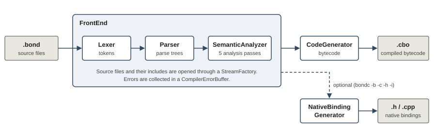
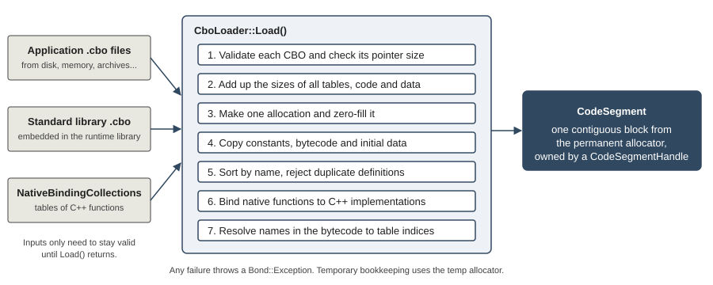
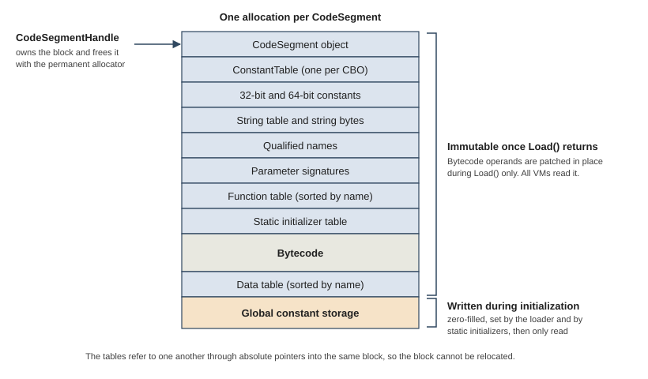
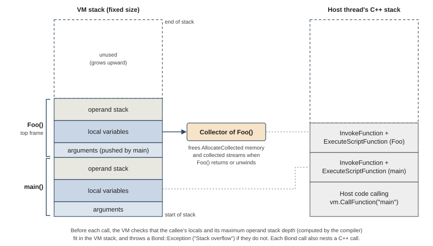
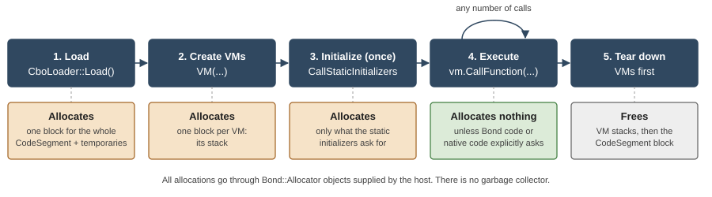
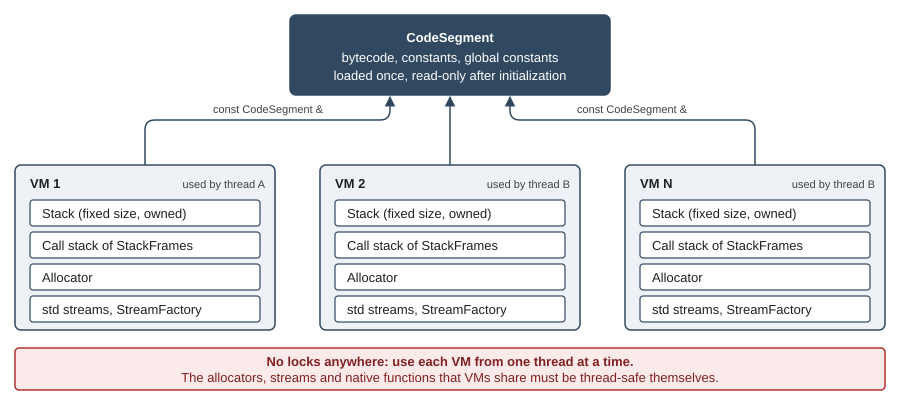

The Bond Architecture
This document describes how Bond is put together: how source code becomes bytecode, how that bytecode is loaded, and how it runs inside an application. While it covers the compiler briefly, most of it is about the runtime, because the runtime's properties determine whether Bond is well suited to an application. These properties include when memory is allocated, what is shared, what happens when something goes wrong, and what Bond does not do for you. If you are comparing Bond with other embeddable scripting languages, such as Lua, the runtime and pitfalls sections are the ones to read. For step-by-step instructions on building Bond and using its API, see Embedding Bond.
- Overview
- The Compiler
- The Runtime
- Components
- Building a Code Segment
- Global Data and Static Initialization
- Virtual Machines
- Execution Model
- Memory and Resources
- Sharing a Code Segment Between VMs
- Errors
- Comparison With Dynamic Scripting Languages
- Pitfalls
Overview
Bond splits its work between two distinct stages:
- Compilation turns Bond source files into compiled Bond object files (CBO files) that contain bytecode. It is normally done ahead of time, for example as a build step or in an asset pipeline. The bondc tool does this from the command line, and the compiler can also be embedded in tools through the C++ API.
- Execution takes place in the application. The runtime loads one or more CBO files, links them into a single code segment, and runs their functions in one or more virtual machines (VMs).
The runtime does not need the compiler. An application that only runs precompiled bytecode never parses source code.
Bond is a statically typed, C-like language, and its runtime is designed in the same spirit as C. Data has a fixed, known layout. Memory is managed explicitly or by scope rather than by a garbage collector. The runtime does nothing behind your back. At a glance:
- Loading builds one immutable code segment in a single memory allocation.
- Creating a VM costs a single allocation: its stack.
- Any number of VMs can share one code segment.
- Once a VM exists, running Bond code allocates no memory and acquires no resources except where the Bond code, or native code it calls, explicitly asks for them.
- There is no garbage collector, so there are no collection pauses and no hidden memory growth.
- There is no sandbox and no synchronization. Bond trusts the scripts it runs and the application that embeds it, the way C does.
The Compiler
The compiler is a classic pipeline. A FrontEnd coordinates three stages:
- The Lexer turns source text into tokens.
- The Parser turns tokens into a parse tree for each source file.
- The SemanticAnalyzer makes five passes over the parse trees. They resolve names, evaluate types and compile-time constant values, and validate the program, for example by rejecting unreachable code or non-constant globals.
The FrontEnd opens source files and the files they include through a StreamFactory, so sources can come from anywhere: disk, memory or an application's asset store. Errors are not thrown. They are collected in a CompilerErrorBuffer so that all of them can be reported at once. When analysis succeeds, the CodeGenerator writes the bytecode for all of the input files to a single CBO file.

A few properties of CBO files matter at runtime:
- A CBO file is compiled for a specific pointer size, 32 or 64 bits (bondc -p32 or -p64, defaulting to the compiler's own). The runtime refuses to load a CBO whose pointer size differs from its own. Multi-byte values are stored in little-endian order, and Bond only supports little-endian targets. A CBO file does not otherwise depend on the platform.
- Functions implemented in C++ are declared in Bond native blocks. Their bodies are absent from the CBO. They are bound to C++ functions when the CBO is loaded. The compiler can also generate the C++ boilerplate for those bindings (bondc -b -c -h -i). This is how the whole Bond Standard Library is implemented.
- A runtime only loads CBO files whose format version is in the range that it supports.
The layout of CBO files is specified in the CBO File Format document.
The Runtime
Components
The runtime library consists of a handful of cooperating parts, all of which are documented in the C++ API documentation.
| Component | Role |
|---|---|
| CboLoader | Validates one or more CBO files, merges them into a CodeSegment, binds native functions and resolves references between functions and data. |
| CodeSegment | The immutable result of loading: function and data tables, constants, bytecode and the storage for global constants. Functions and global constants can be looked up by qualified name, such as "Game.Update". |
| VM | Executes the functions of a CodeSegment. It owns a fixed-size stack and refers to an Allocator, standard input, output and error streams, and a StreamFactory for opening files. |
| StackFrame, InvocationStackFrame | The activation record of a function call. Native functions read their arguments from it and write their return values to it. Host code uses an InvocationStackFrame, or the VM::CallFunction shortcut, to call Bond functions. |
| Collector | Attached to every stack frame. It releases the resources registered with it when the function call ends. This is the basis of Bond's scope-based resource management. |
| NativeBindingCollection | A table that maps the qualified names of native functions to C++ functions with the signature void F(Bond::StackFrame &frame). |
| Allocator | An abstract interface through which every allocation made by Bond passes. The application supplies the implementation. A simple DefaultAllocator based on new and delete is provided. |
| Standard Library | Precompiled CBOs embedded in the runtime library, plus their native bindings. LoadAllLibs() or the individual LoadLib*() functions add them to a CboLoader. See the Standard Library documentation. |
Building a Code Segment
The application adds CBO files to a CboLoader, either as in-memory buffers or as input streams, along with the NativeBindingCollections of the standard library and of its own native functions. It then calls Load(), which works in two passes. The first pass validates every CBO and adds up the size of everything it contains. The second pass makes a single allocation large enough for the whole code segment, zero-fills it, and copies the constants, bytecode and initial data of all the CBOs into it.
The loader then links the result:
- Functions and global constants are sorted by name, so that they can be looked up with a binary search. A name defined more than once is an error.
- Every native function is bound to its C++ implementation. A native function without a binding, or a binding that does not name a native function, is an error.
- Function and data names referenced by the bytecode are resolved to table indices, and the bytecode is patched in place, so that no name lookups happen during execution. A reference to a name that is not defined is an error.
All errors are reported by throwing a Bond::Exception. When Load() returns, the CBO files are no longer needed and can be released. The code segment is returned in a CodeSegmentHandle, which owns the allocation. The CboLoader can use a separate allocator for its temporary bookkeeping, so that the long-lived code segment and short-lived loading data can come from different memory pools.


Global Data and Static Initialization
Bond does not allow global variables. Data declared at file or namespace scope must be const. This rule follows directly from the runtime's design. Storage for global constants lives in the code segment, and a code segment is shared by every VM that runs it (see below). A global variable would have to be one of two things:
- Shared by all VMs. Unrelated script instances would then see each other's changes, and VMs on different threads would race on that data.
- Copied for every VM. Creating a VM would then cost an allocation and initialization proportional to the size of the program's global data.
Bond avoids both by keeping the code segment immutable. State lives on a VM's stack, in memory passed via function parameters, or in memory that the script allocates explicitly and passes around.
Global constants are initialized in two ways:
- A constant whose value is known at compile time, such as const int SIZE = 16;, is stored in the CBO and written by the loader. The rest of the storage is zero-filled.
- A constant whose value can only be computed at runtime, such as const int SQUARE = Square(7);, is initialized by a static initializer. That is a function generated by the compiler, at most one per CBO. The application runs these initializers by calling CodeSegment::CallStaticInitializers(vm) once, after loading and before running any other Bond code. They run in the order in which the CBOs were added to the loader, and in declaration order within each CBO. The VM does not call them automatically.
After static initialization, nothing in the code segment is written again.
Virtual Machines
A VM is constructed from an Allocator, a reference to a CodeSegment and a stack size. It can optionally also take the streams to use as standard input, output and error, and a StreamFactory through which the standard library opens files. The VM holds a const reference to the code segment. It neither copies nor modifies it, so the code segment must outlive every VM that uses it.
The constructor makes exactly one allocation: the VM's stack, whose size is fixed for the VM's lifetime. A VM holds no other per-program state. That is why creating a VM is cheap, regardless of how large the program is.
The application calls Bond functions by qualified name or through a const Function * looked up in advance. It can use VM::CallFunction() and VM::CallVoidFunction(), or build a call argument by argument with an InvocationStackFrame. When runtime checks are enabled, the default (BOND_RUNTIME_CHECKS_ENABLED), the argument and return types used by the host are validated against the function's signature.
Execution Model
The VM is a stack-based bytecode interpreter. Each function call gets a frame on the VM stack holding its arguments, its local variables and its operand stack. The compiler computes the size of the locals and the maximum depth of the operand stack for every function. Before each call, the VM checks that the callee's frame fits in the remaining stack space, and throws an exception if it does not. Within a function, no further bounds checks on the stack are needed. The instructions are specified in the Bond Instruction Set document.
Calls between Bond and C++ work in both directions. A native function receives the StackFrame of its call, reads its arguments with GetArg<T>(), and sets its return value with SetReturnValue(). It may call back into Bond on the same VM. Arguments and return values use Bond's fixed-width types and C-like struct layout, so data can be exchanged with C++ without conversion.
Each call made by Bond code also makes a nested call on the host thread's C++ stack. A deep chain of Bond calls therefore uses native stack space as well as VM stack space (see Pitfalls).

Memory and Resources
Bond has no garbage collector, and its runtime never allocates memory on its own initiative once a VM exists. Executing Bond code acquires memory or other resources in only these cases:
- The script calls a memory function of the standard library, such as Allocate() or AllocateCollected(), or opens a file stream, such as with CreateInputStream(). All of these go through the VM's Allocator and StreamFactory.
- A native function supplied by the application allocates memory itself. What the application's native code does is up to the application.
Arithmetic, function calls, local variables, structs, arrays and string literals never allocate. Locals and temporaries live on the VM stack, and string literals live in the code segment. Bond has no hidden boxing, string building or closure allocation. A function that does not allocate explicitly runs in bounded, predictable memory.
Memory that the script acquires is released in one of two ways:
- Explicitly, with Free(), FreeAligned() or the stream-closing functions, as in C.
- By scope, using the collected variants of the allocation and stream functions. These register the resource with the Collector of the calling function's stack frame. The resource is released when that function returns, or when its frame is unwound by an exception. A function can hand its Collector to a function it calls, so that the callee can allocate memory that outlives it. See Scope-Based Resource Management.
Either way, memory is released at a well-defined point in the program, and its cost is paid there and nowhere else.

The following sketch shows these phases in C++. Error handling and the application's own native bindings are omitted. Embedding Bond has a complete program.
Bond::DefaultAllocator allocator;
// 1. Load: link the CBOs into a single CodeSegment.
Bond::CboLoader cboLoader(allocator);
Bond::LoadAllLibs(cboLoader);
cboLoader.AddCboFile(cboBytes, cboSize);
Bond::CodeSegmentHandle codeSegment = cboLoader.Load();
// 2. Create a VM: allocates its 64 kB stack and nothing else.
Bond::VM vm(allocator, *codeSegment, 64 * 1024);
// 3. Initialize global constants, once per CodeSegment, using any VM.
codeSegment->CallStaticInitializers(vm);
// 4. Execute: no allocations unless the script asks for them.
const Bond::Function *update = codeSegment->GetFunction("Game.Update");
int32_t result = 0;
vm.CallFunction(*update, &result, deltaTime);
// 5. Tear down: vm is destroyed before codeSegment (reverse declaration order).
Sharing a Code Segment Between VMs
Since a VM owns nothing but its stack and a code segment is never written after static initialization, any number of VMs can reference the same code segment. A program is loaded once, however many instances of it run. Each additional instance costs one stack allocation of a size the application chooses. This works well for running one script per game entity, per request or per document, or for keeping a few VMs on standby so that work can start without delay.

Bond performs no synchronization of any kind. Sharing a code segment between VMs is safe because the code segment is only read. The runtime does not manage threads or locks. If VMs run on more than one thread:
- Each VM must be used by only one thread at a time.
- CallStaticInitializers() must complete before any VM starts running Bond code, and it must be called only once.
- Any Allocator, stream, StreamFactory or native function that more than one VM uses must be thread-safe. The DefaultAllocator is not thread-safe, because it keeps an unsynchronized count of outstanding allocations. Give each thread its own allocator, or supply a thread-safe one.
- Scripts must not share mutable memory through pointers held in global constants. See Pitfalls.
Errors
The runtime reports errors by throwing a Bond::Exception. This happens when loading fails, a function cannot be found, the VM stack overflows, the host calls a function with the wrong argument or return types (with runtime checks enabled), or a native function raises an error. Errors raised during execution include a dump of the Bond call stack in the exception's message, which is stored in a fixed-size buffer inside the exception object. Bond has no exception handling of its own, so the exception propagates through any Bond frames to the host code that started the call. As the frames unwind, their Collectors release any collected resources and the VM's call stack is restored, so the VM can be used again. Memory allocated with Allocate() and not yet freed is leaked, just as it would be in C.
Comparison With Dynamic Scripting Languages
The table below summarizes how Bond's runtime differs from that of a typical dynamic scripting language, using Lua as the example. Neither approach is better in general. Bond trades safety and flexibility for predictability and low overhead.
| Bond | Lua (typical usage) | |
|---|---|---|
| Typing | Static, checked at compile time | Dynamic, checked at runtime |
| Compilation | Ahead of time; the compiler is not needed by the application | Usually compiled from source when loaded; precompiled bytecode is optional |
| Memory management | Explicit or scope-based; no garbage collector | Garbage collected |
| Allocation during execution | Only when explicitly requested | Implicit, e.g. when creating tables, strings and closures |
| Pauses | None introduced by the runtime | Garbage collection work is interleaved with execution |
| Data exchange with C++ | C-like structs and fixed-width types; pointers can be passed directly | Values are converted through the C API's stack; C data is wrapped in userdata |
| Running many instances | Many VMs share one loaded code segment; each new VM costs one stack allocation | Each independent state loads its own copy of the scripts |
| Memory safety | None; scripts use raw pointers and can corrupt the host | Memory-safe at the language level; scripts can be sandboxed by restricting their environment |
| Suspending scripts | Not supported; a call runs to completion | Coroutines; debug hooks can interrupt long-running scripts |
| Dynamic features | No closures, function pointers or runtime code loading | First-class functions, closures, metatables, loading code at runtime |
Pitfalls
Bond's runtime does exactly what it is told and very little else. The following consequences of that design are easy to overlook.
Bond is not a sandbox
Bond has C's pointers and C's lack of safety nets. The VM does not check for null pointers, array bounds or integer division by zero. A faulty script can crash the application or silently corrupt its memory, including memory that belongs to other VMs or to the code segment. Treat Bond scripts as trusted code, with the same level of trust as the application's own C++. Bond is not suitable for running untrusted, user-supplied code.
Bond calls consume the host thread's stack
The VM checks for overflow of its own stack, but every Bond function call also nests a C++ call on the thread that runs the VM. Deep recursion in a VM with a large stack can exhaust the native thread stack before the VM's stack runs out. That crashes the application rather than throwing an exception. Size VM stacks with the host thread's stack in mind, or keep recursion shallow.
Scripts cannot be interrupted
A Bond function runs until it returns or throws. There are no coroutines, no instruction limits and no way to preempt a VM, so an infinite loop in a script blocks the calling thread forever. Work that needs to be spread over time must be structured as explicit calls from the host.
Static initializers must be run, exactly once
If CallStaticInitializers() is never called, constants initialized at runtime silently read as zero. If it is called again, or while other VMs are running, it rewrites data that every VM shares and repeats any allocations the initializers make.
Global constants are only shallowly constant
Only the outermost part of a global's type has to be const. A global constant can be a pointer to mutable memory, such as int *const BUFFER = cast<int *>(Bond::Allocate(1024UL));. That memory is then shared by every VM that uses the code segment, which brings back exactly the shared mutable state that the language rule is meant to prevent. Two related issues come with it:
- Memory allocated by a static initializer comes from the allocator of the VM passed to CallStaticInitializers().
- Memory allocated with a collected function in a static initializer is released as soon as the initializer returns, which leaves the global pointing at freed memory.
const is enforced by the compiler, not the hardware
A cast can remove const from a pointer, and the code segment's memory is not write-protected. Code that writes to a global constant through such a pointer changes it for every VM. Worse, the change is inconsistent. Compile-time constants are folded into the bytecode where they are used, so those uses still see the original value, while reads through pointers see the new one.
Lifetimes are the application's responsibility
- The code segment must outlive every VM that references it.
- Streams, StreamFactories and Allocators passed to a VM are not owned by it and must outlive it.
- CBO data passed to the CboLoader only needs to remain valid until Load() returns.
Errors are C++ exceptions
Runtime errors propagate as Bond::Exception through every frame between the error and the host code that called into Bond, including any native functions in between. Native functions that call back into Bond, or that hold resources across such calls, must be exception-safe. Applications built without exception support cannot use Bond.
CBO files must match the runtime
A CBO compiled for a different pointer size, or in a format version that the runtime does not support, is rejected at load time.
Look up functions once
Looking up a function by name is a binary search with string comparisons. It is fast, but not free. Applications that call the same function repeatedly, such as once per frame, should look up its const Function * once and reuse it. It remains valid for the lifetime of the code segment.